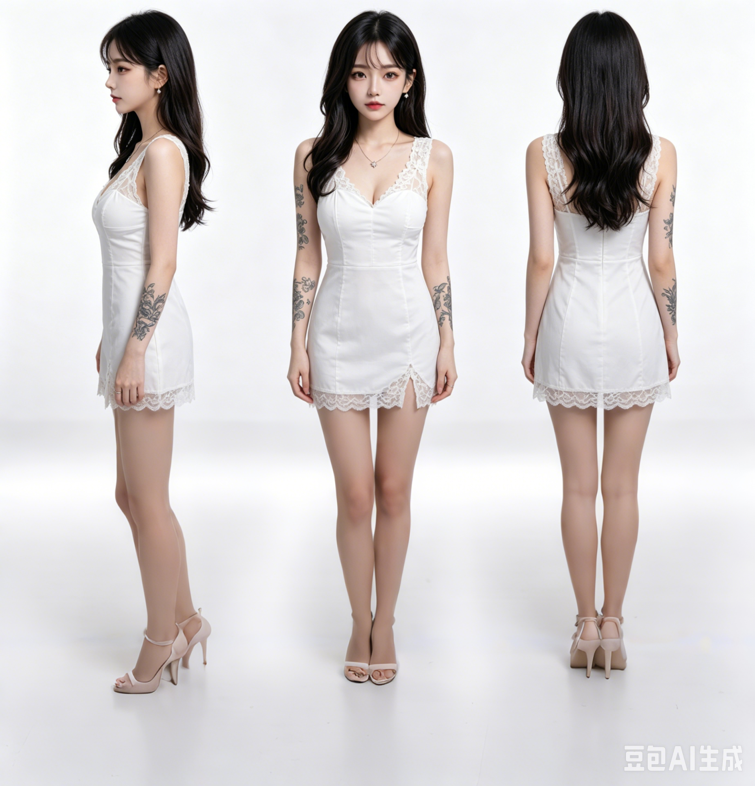
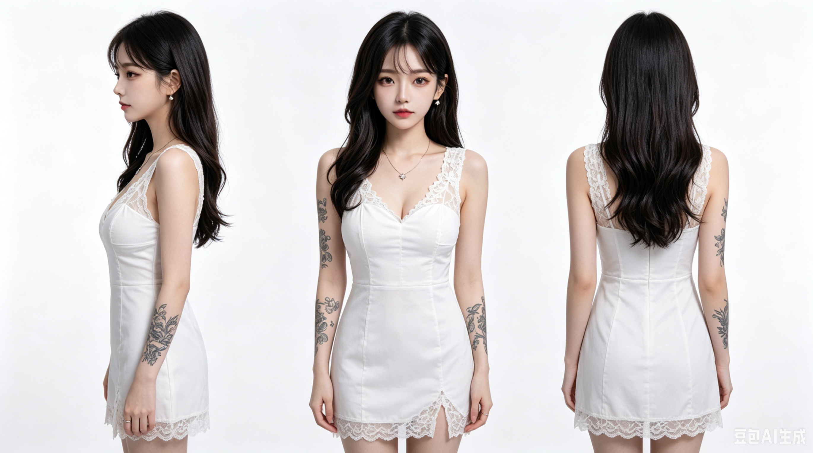
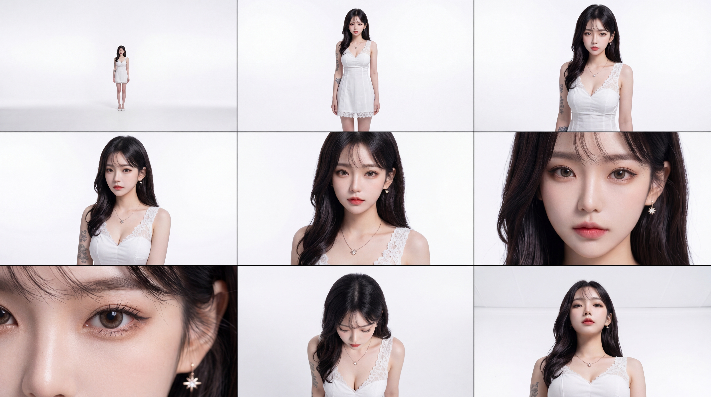

这是我在 aogl.cn 归档的一篇个人视觉练习手记，素材全部来自 original/role-girl/。目标很简单：用生成式出图做一条可重复辨认的女性角色线，先锁住服装与体态，再试表情、光影和场景，最后导出几段短视频看「像不像同一个人」。这不是工具教程，也不是 Hub 维护说明；如果你要找的是「某某 App 怎么批量出图」，这篇不会帮你点按钮。
我为什么先钉死一条白裙
卡牌类练习最怕第一天画礼服、第二天换机车夹克——脸再像也不是同一张卡。我选的是白色蕾丝短裙 + 细高跟凉鞋：轮廓干净，正侧背三个角度都容易读。合成图 card.png 把侧、正、背放在同一张白底上，相当于给自己一张「不许跑偏」的尺子。手臂上的花纹纹身是刻意的识别点：后续每张半身如果纹身位置飘了，我会直接丢掉，而不是用后期硬修。

card.png — 侧 / 正 / 背三视图，定稿前的体态与服装阅读。十二张半身：我在改什么，不是在堆数量
card-1.png 到 card-12.png（部分为 JPG）不是「抽卡凑满一打」，而是分三轮试错：
- 脸与发型：刘海厚度、发尾卷度、眼神是直视还是微微侧开。早期几张我会故意让妆面偏淡，避免每张都像杂志封面。
- 首饰与领口：星形吊坠、细链耳环是否在同一条视觉线上；蕾丝 V 领的深浅一旦变样，整件衣服就像换了款。
- 背景与色温：有的保留纯白棚拍感，有的略暖，用来测试导出后缩略图是否还认得轮廓。
下面选六张代表不同阶段的「留下理由」，其余文件仍在文件夹里，方便我自己对比删改。



雨夜书房：一张故意「跑偏」的锚点图
Gemini_Generated_Image_4c1l7v4c1l7v4c1l.png 和棚拍白裙不是同一套光照，我仍把它留在目录里。原因很现实：如果角色只会站在无缝白底上，她像证件照；我需要一张叙事型的图提醒自己——同一张脸放进暖色台灯 + 雨窗城市反光里，裙摆、皮肤高光、纹身对比都会变。这张图不当作三视图的替代品，而是「情绪上限」参考：以后若做封面或横幅，我知道暖冷对比可以拉到什么程度。
card.png 棚拍线并列存放，不混用为设定表正文。三段 MP4：动起来的破绽比静帧更诚实
静帧可以靠单张精度骗人，短视频则会暴露发型边缘、蕾丝抖动、纹身是否跟手臂一起动。card-v1.mp4、card-v2.mp4、card-v3.mp4 是我按时间顺序保留的三次导出，没有对外宣称「最终动画」，只是私人验收：
- v1：先看整体节奏是否太机械；若步伐或转身像滑步，直接回到静帧改体态。
- v2：收紧发型与肩线，减少帧间闪烁。
- v3：在可接受范围内加一点点镜头感，但仍以「认人」为第一优先级，不追特效。
card-v1.mp4 — 第一次动态验收。card-v2.mp4 — 减少闪烁后的第二轮。card-v3.mp4 — 第三轮，仍非商业成片。我刻意没做的事
这套素材不是游戏资产包：没有骨骼绑定、没有精灵表、没有引擎内 LOD。也不是商单交付——没有甲方指定的色号 Pantone，没有可印刷的出血线。文件夹里若出现平台水印，我只作来源记录，不在这里教你怎么去掉水印或批量爬图。
和本站其他角色页的关系
同站另有 角色四视图与行走循环 归档，走的是另一条更偏动画管道的角色；本篇 role-girl 更靠近「卡牌 / 半身定稿 + 情绪场景」。两条线并行，避免把不同练习硬塞进同一套文件名。
若你要复用这套结构
建议固定：一张三视图尺子 + 编号探索静帧 + 少量视频验收 + 一张叙事锚点，再用一篇像本文一样的手记把「留下 / 丢掉」写清楚。比堆十篇「AI 工作流」更接近个人作品集，也更容易让访客（和审核）看出站点有人在维护真实创作，而不是只聚合外链。